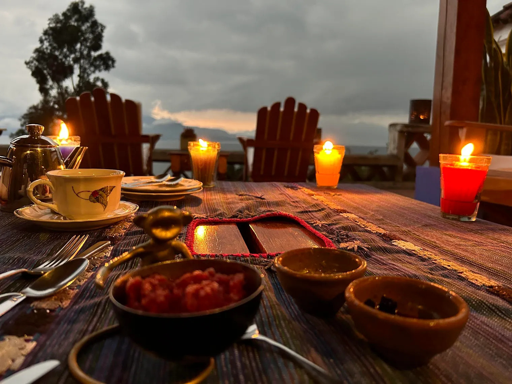

Essays on faith, liberation, and transformation — plus media appearances, podcast features, and documentary films that span more than a decade of public voice.
From Medium — @Brother_Wes
Essays exploring the intersections of faith, freedom, and the long work of transformation.
A meditation on the 23rd Psalm’s “still waters” — and the possibility that what we most need is not the comfort we expect, but the darkness we have been taught to fear. On pastoral care, grief, and the kind of presence that does not flinch.
Read on Medium ↗
On what it means to finish — not just begin — and the discipline of seeing your commitments through when the energy of the beginning has long since faded.
A personal essay on music, intimacy, and the particular kind of self-knowledge that only comes through the practice of an instrument you have kept returning to your whole life.
On basketball, belonging, and what it means to want something badly enough to risk being told no. The lessons of the tryout that extend well past the gym.
On the ordinary miracle of waking — and what it means to meet a day with intention, to carry your history into the morning without being dragged under by it.
On running while Black — the politics of a Black body in motion through white space, the discipline of the run, and what it means to claim public ground through presence.
Written the morning after the 2016 election — a reckoning with grief, with responsibility, and with what the church and the movement are called to do next. A document of a particular American morning.
Media
Featured interview exploring the intersection of faith, political power, and the prophetic tradition’s responsibility to resist Christian nationalism.
Watch on YouTube ↗
A conversation on mentorship, movement, and the long arc of justice in Greensboro, NC — with mentor Rev. Nelson Johnson.
Watch on YouTube ↗
Featured in the Church Anew Leadership Lab series, connected to the “Rewilding Otherwise” Lilly Foundation grant project.
Read at Church Anew ↗
On wonder, cosmology, and the spiritual dimensions of contemplating the universe — what awe requires of us and what it gives back.
Listen on Spotify ↗
Featured in the emotional intelligence podcast series — exploring dark theological traditions as resources for authentic transformation. Why the pursuit of comfort can be the enemy of growth.
Listen at KeyStep Media ↗
A speech delivered at the 40th anniversary celebration dinner of Hold the Line: Black Workers for Justice, recognizing four decades of labor organizing and racial justice work.
Watch on YouTube ↗
Commencement speaker at Union Theological Seminary’s 2017 graduation ceremony. Wesley’s address begins at 2:02:28 in the recording.
Watch on YouTube (begins 2:02:28) ↗
Featured in the documentary on migrant farm worker rights and advocacy in North Carolina, connected to organizing work with the Farm Labor Organizing Committee.
Watch on PBS ↗
Essays on faith, liberation, community, and the long work of transformation — published at @Brother_Wes.